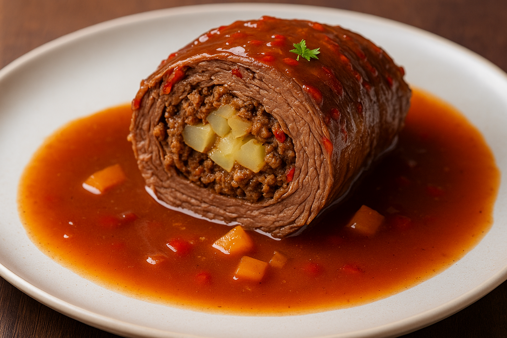

Klassische Rinderrouladen

-
Die Rinderrouladen mit Küchenkrepp trockentupfen. Zwiebeln in
Halbmonde, Gurken in Längsstreifen schneiden. Schere und Küchengarn
bereitstellen.
-
Die ausgebreiteten Rouladen dünn mit Senf bestreichen, salzen und
pfeffern. Auf jede Roulade mittig in der Länge ca. 1/2 Zwiebel und 1
1/2 Scheiben Frühstücksspeck sowie 1/2 (evtl. mehr) Gurke verteilen.
Nun von beiden Längsseiten etwas einschlagen, dann einrollen und mit
dem Küchengarn wie ein Postpaket verschnüren.
-
In einer Pfanne das Butterschmalz heiß werden lassen und die
Rouladen rundherum darin anbraten. Herausnehmen und in einen
Schmortopf umfüllen.
-
Den Sellerie, die restliche Zwiebel, Lauch und Möhren kleinschneiden
und in der Pfanne anbraten. Sobald sie halbwegs "blond" sind, kurz
rühren. Eine sehr dünne Schicht vom Rotwein angießen, nicht mehr
rühren und die Flüssigkeit verdampfen lassen. Sobald das Gemüse dann
wieder trockenbrät, wieder eine Schicht Wein angießen, kurz rühren
und weiter verdampfen lassen. Dies wiederholen, bis die 1/2 Flasche
Wein aufgebraucht ist. Auf diese Art wird das Röstgemüse sehr braun
(gut für den Geschmack und die Farbe der Soße), aber nicht trocken.
Am Schluss mit dem Rinderfond, etwas Salz und Pfeffer und einem
guten Schuss Gurkensud auffüllen und dann in den Schmortopf zu den
Rouladen geben. Den Deckel auflegen.
-
Den Topf entweder auf kleine Flamme stellen oder bei ca. 160 °C
Ober-/Unterhitze in den Backofen für 1 1/2 Stunden geben. Ab und zu
evtl. etwas Flüssigkeit zugießen.
-
Nach 1 1/2 Stunden testen, ob die Rouladen weich sind (einfach mal
mit den Kochlöffel ein bisschen draufdrücken, sie sollten sich
willig eindrücken lassen - wenn nicht, noch eine halbe Stunde
weiterschmoren). Dann vorsichtig aus dem Topf heben und warm
stellen.
-
Die Soße durch ein Sieb geben und wieder aufkochen lassen. Ca. 1 EL
Senf mit etwas Wasser und der Speisestärke gut verrühren, in die
kochende Soße nach und nach unter Rühren gießen, bis die gewünschte
Konsistenz erreicht ist. Die Soße nochmal mit Salz, Pfeffer, Rotwein
und Gurkensud abschmecken.